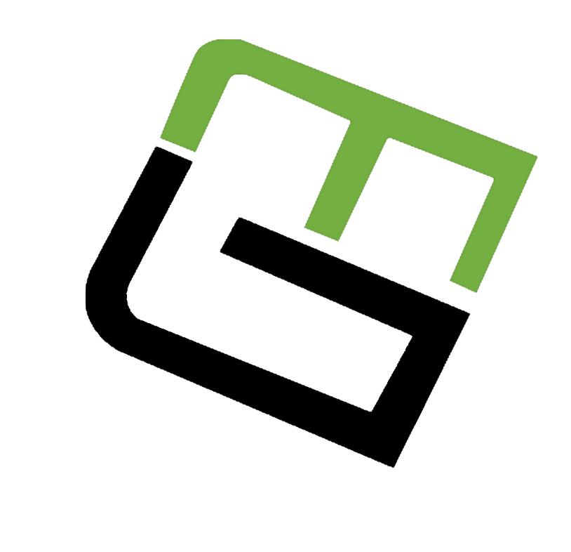
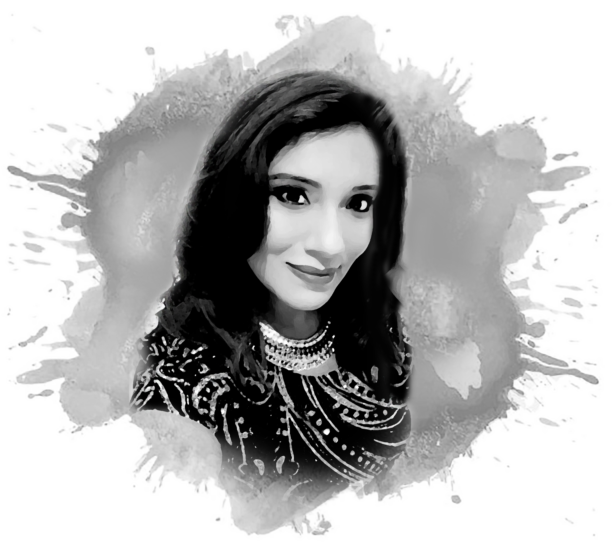
Keywords - "ME"
- Creative
- Passionate
- Meticulous
- Adaptable
- Skilled
- Team Player
- Energetic
- Positive Thinker
MOONMITA
A Hybrid UI/UX Designer
With Deeply
Interdisciplinary Chops....!
With Deeply
Interdisciplinary Chops....!
Welcome To My Page
I am UX/UI designer based in San Francisco, California. I like to describe myself as
more than just a designer. I see myself as a creator of a universe of user stories and images. With
my head filled with innovative ideas, I thrive to create eye-catching & highly user-friendly design
solutions provoking emotion in the public. All this on the border between art, craft and technological
innovation, always with a piano and a microphone within my arm's reach to create passionate soothing music.
I am specialized in digital development with a touch of glam rock and a touch of glitter. I manage and oversee
the technical aspects of all the projects of my current company.
Over the past 6 years, I am working as a Web Designer/ Visual Graphic Designer in different companies. I have previous experience of working in different industries like software development companies, advertisement design agency, and fashion-beauty industry. I have extensive working experience in both web and print platform. My unique creativity and great technical knowledge combine to create high-quality user experience designs.
I believe, a great design is informed design. Understanding the users beliefs and motivation is the key in creating a successful experience,
that users find effortless and natural.
I am passionate about all types of music, cinema. I am also a passionate photographer, singer, and painter.Over the past 6 years, I am working as a Web Designer/ Visual Graphic Designer in different companies. I have previous experience of working in different industries like software development companies, advertisement design agency, and fashion-beauty industry. I have extensive working experience in both web and print platform. My unique creativity and great technical knowledge combine to create high-quality user experience designs.
Project Skills
I have experience working with teams to
brainstorm and whiteboard concepts. I can create wireframes. I enjoy creating prototyping ideas and mockups
at varying levels of fidelity.
I have some basic front-end coding experience as well.
• Design Strategy • User Interface Design • Visual Design • Product Design • User Research • User Parsonas • Storyboarding • User Scenario • Design Thinking • Information Architechture • Sitemap • User Flow • Wireframing • Prototyping • High Fidelity Mock-ups • Style Guides • Mood Boards • Brand Analysis • Typography • Color Theory • Iconography • Sound Editing • Video Editing
• Design Strategy • User Interface Design • Visual Design • Product Design • User Research • User Parsonas • Storyboarding • User Scenario • Design Thinking • Information Architechture • Sitemap • User Flow • Wireframing • Prototyping • High Fidelity Mock-ups • Style Guides • Mood Boards • Brand Analysis • Typography • Color Theory • Iconography • Sound Editing • Video Editing
Technical Skills
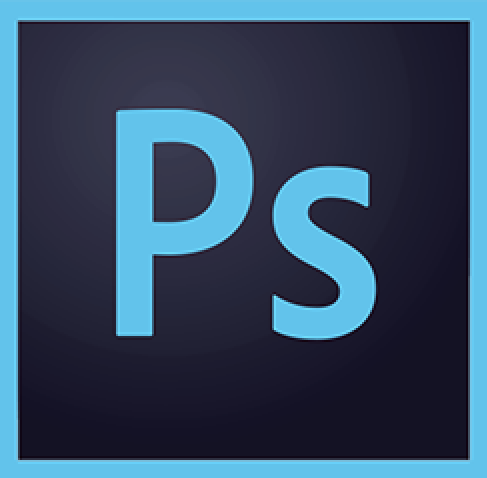
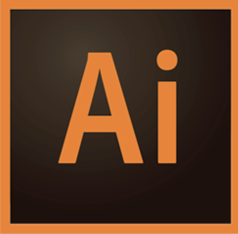
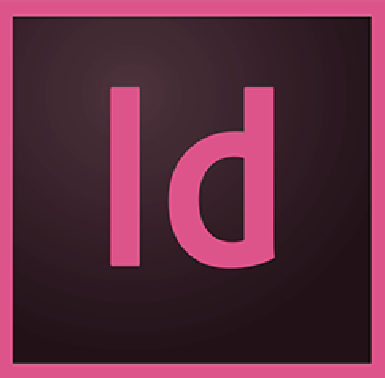
 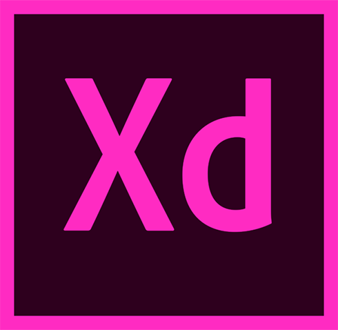
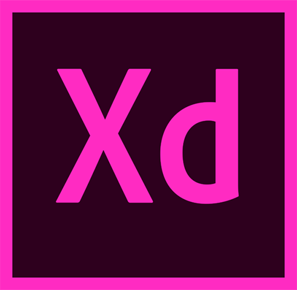
 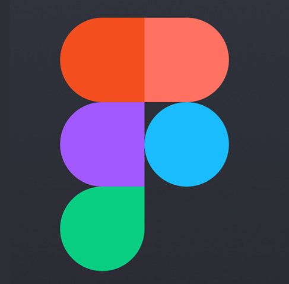
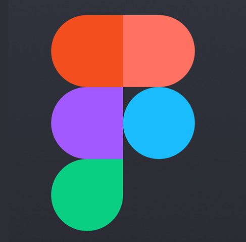


My Works
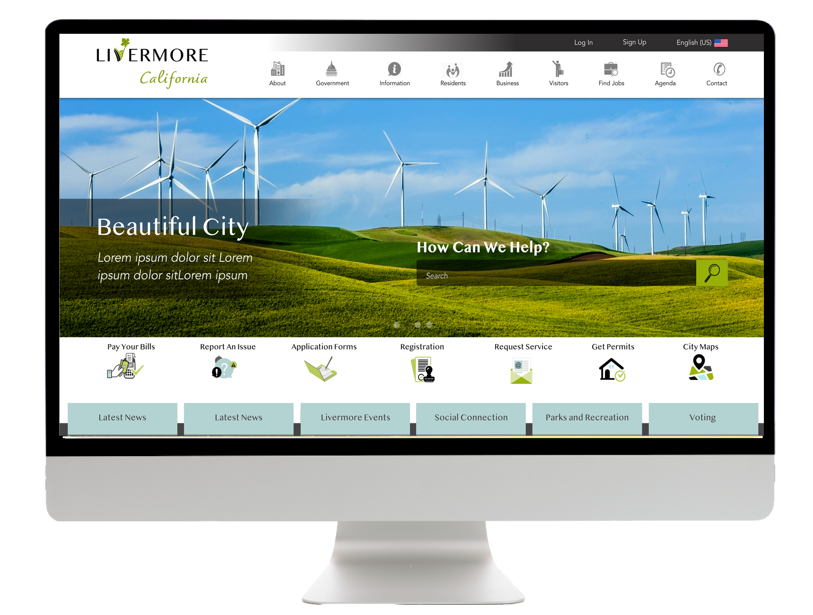
Responsive Webdesign For City of Livermore
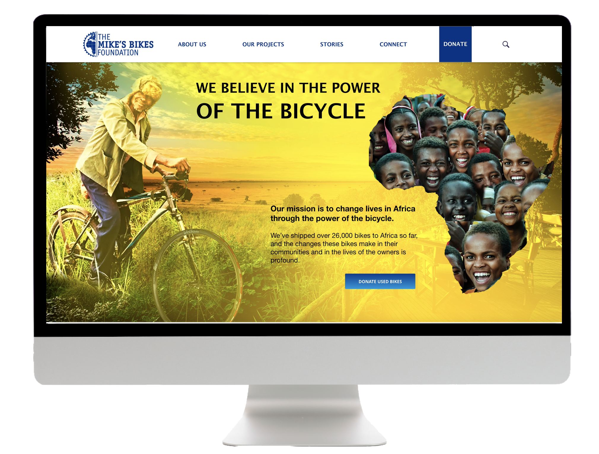
Responsive Webdesign For Mikes Bike Foundation
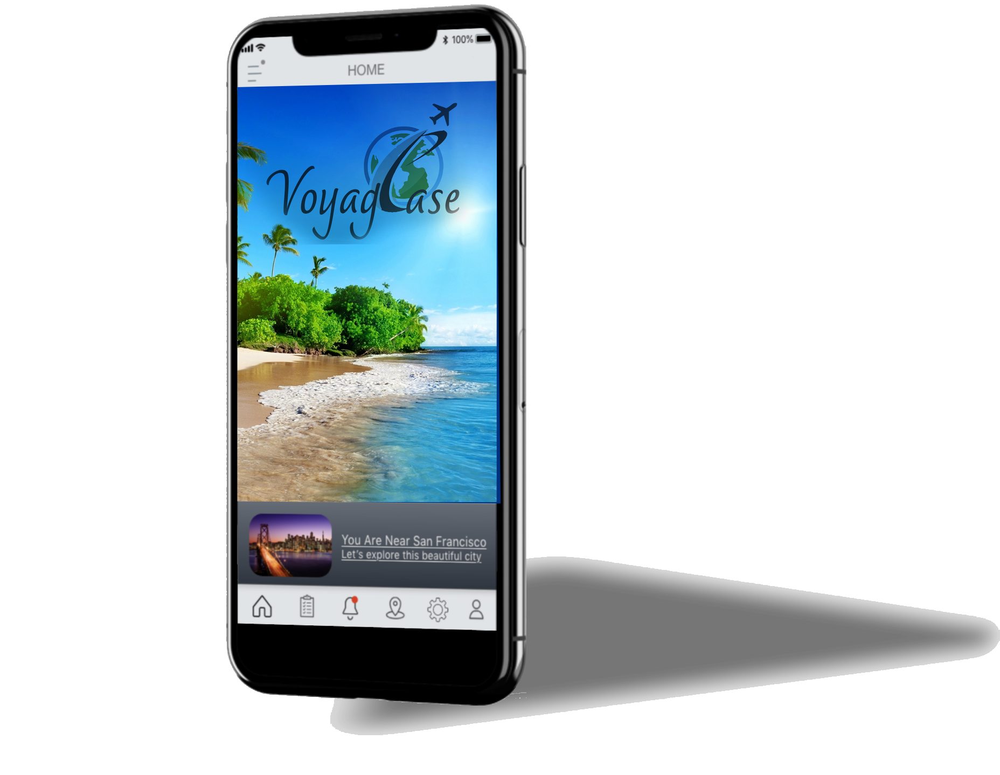
Travel Mobile App VoyagEase